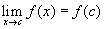
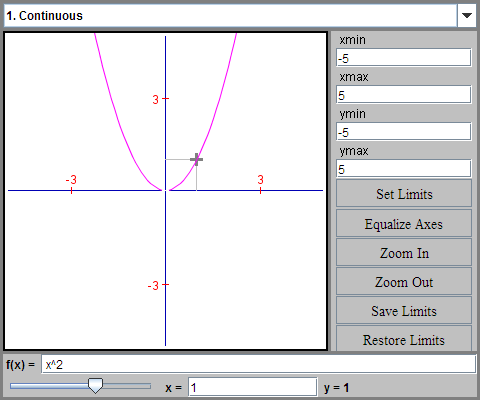

Now that we have a formal definition of limits, we can use this to define continuity more formally. We can define continuity at a point on a function as follows:
The function f is continuous at x = c if f (c) is defined and if

.In other words, a function is continuous at a point if the function's value at that point is the same as the limit at that point. We can use this definition of continuity at a point to define continuity on an interval as being continuous at every point in the interval.

| See About the calculus applets for operating instructions. |
The first graph shown, a simple parabola. Move the slider to pick an x value. Notice that the value of the function, given by y =, is the same as the limit at that point. So the function is continuous at that x value. Since this is true for any x value that you pick, the function is continuous everywhere.
Select the second example from the drop down menu. The sine curve has more wiggles in it, but it is still continuous. Move the slider to pick an x value. Like the previous example, everywhere you look the output value of the function is the same as the limit, so this function is also continuous everywhere.
Select the third example. This function has a vertical asymptote at
Select the fourth example. This function jumps from 1 to 2 at x = 1. Notice that f (1) = 2, but the limit at x = 1 does not exist (because the left-hand and right-hand limits are different). Hence this function is not continuous at at x = 1.
Select the fifth example. This function has a hole in it at x = 1. This time, the limit is defined at x = 1 (and is 1), but the function does not have a value there, so it is not continuous at x = 1.
Select the sixth example. This function has a displaced point at